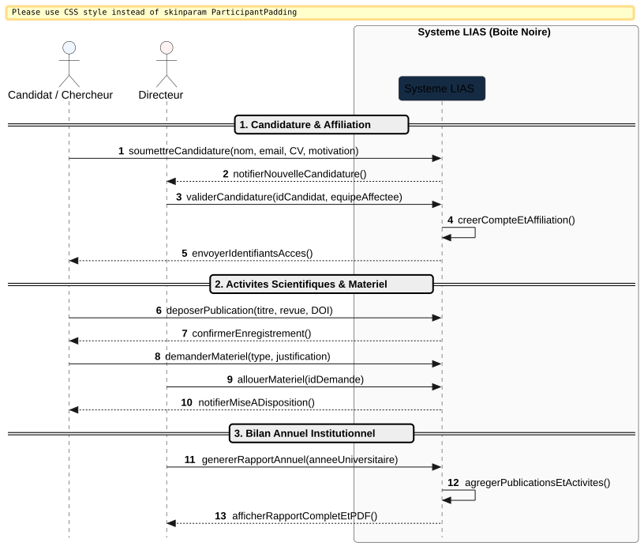
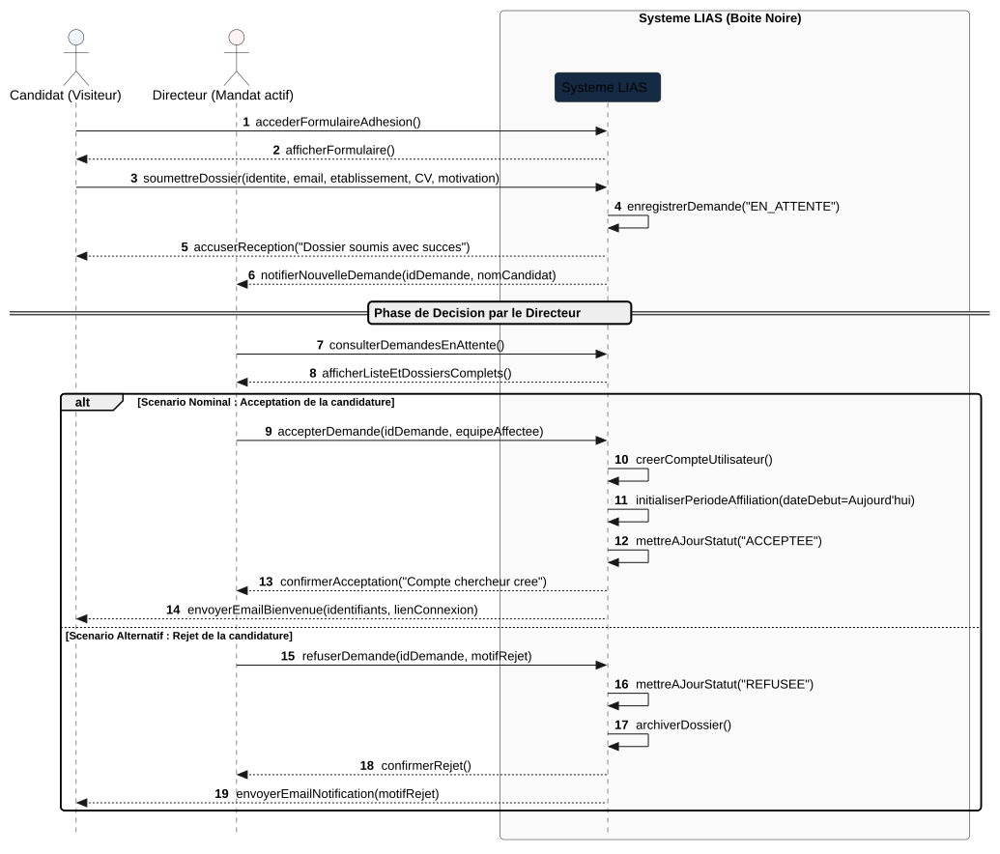
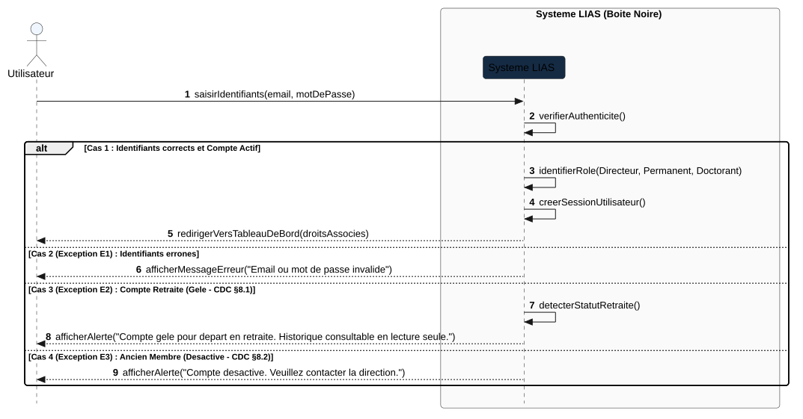
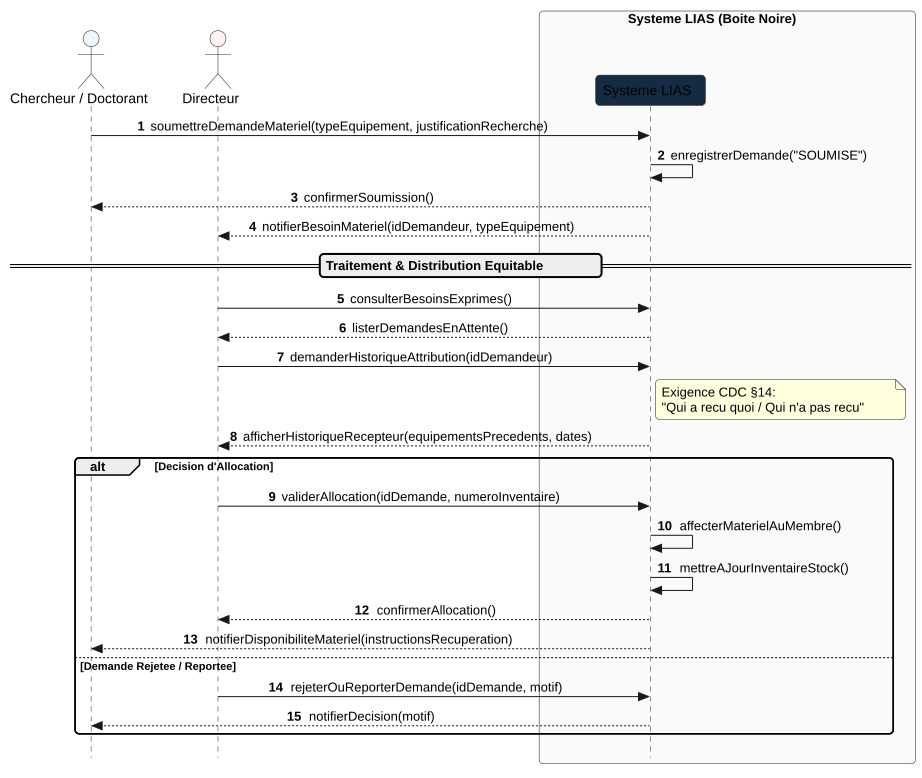
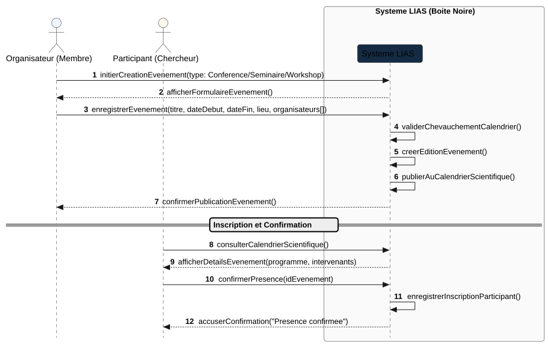
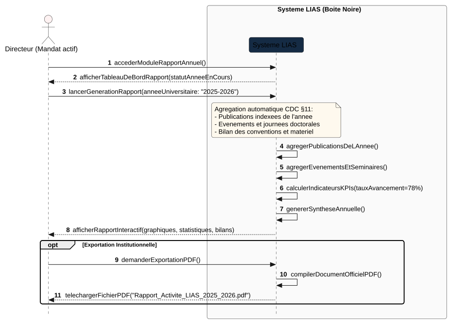

في هندسة البرمجيات (Génie Logiciel)، يمثل مخطط التسلسل للعلبة السوداء (Diagramme de Séquence Système - Boîte Noire) تتابع الرسائل والأحداث بين الفاعلين الخارجيين (Acteurs) والنظام ككتلة واحدة غير مجزأة (Système: Boîte Noire). توضح هذه المخططات كيف يعالج النظام مختلف السيناريوهات الاسمية (Nominal) والبديلة (Alternatif) واستثناءات الخطأ (Exceptions) المستخرجة حرفياً من دفتر التحملات الرسمي (GestionLaboratoireLIAS.pdf).
:Système LIAS تستقبل طلبات الفاعلين (Events / Requêtes) وترد عليهم باستجابات وشاشات (Responses / Écrans). هذا يسبق مرحلة التصميم الداخلي (Boîte Blanche).
يعرض هذا المخطط تسلسل أهم المراحل الكبرى لمسار الباحث داخل المختبر: من تقديم طلب الانضمام إلى إيداع الأبحاث والاستفادة من العتاد وحتى إنتاج التقرير السنوي:

@startuml
autonumber
skinparam style strictuml
skinparam defaultFontName Arial
skinparam sequenceMessageAlign center
skinparam roundcorner 8
skinparam BoxPadding 10
skinparam ParticipantPadding 15
actor "Candidat / Chercheur" as Chercheur #EFF6FF
actor "Directeur" as Dir #FEF2F2
box "Système LIAS (Boîte Noire)" #FAFAFA
participant "Système LIAS" as System #152B44
end box
== 1. Candidature & Affiliation ==
Chercheur -> System : soumettreCandidature(nom, email, CV, motivation)
System --> Dir : notifierNouvelleCandidature()
Dir -> System : validerCandidature(idCandidat, equipeAffectee)
System -> System : creerCompteEtAffiliation()
System --> Chercheur : envoyerIdentifiantsAcces()
== 2. Activités Scientifiques & Matériel ==
Chercheur -> System : deposerPublication(titre, revue, DOI)
System --> Chercheur : confirmerEnregistrement()
Chercheur -> System : demanderMateriel(type, justification)
Dir -> System : allouerMateriel(idDemande)
System --> Chercheur : notifierMiseADisposition()
== 3. Bilan Annuel Institutionnel ==
Dir -> System : genererRapportAnnuel(anneeUniversitaire)
System -> System : agregerPublicationsEtActivites()
System --> Dir : afficherRapportCompletEtPDF()
@enduml
يمثل السيناريو الكامل للترشح عبر البوابة، مع تفريع مسار القبول (السيناريو الاسمي) ومسار الرفض (السيناريو البديل):

@startuml
autonumber
skinparam style strictuml
skinparam defaultFontName Arial
skinparam sequenceMessageAlign center
skinparam roundcorner 8
actor "Candidat (Visiteur)" as Candidat #EFF6FF
actor "Directeur (Mandat actif)" as Dir #FEF2F2
box "Système LIAS (Boîte Noire)" #FAFAFA
participant "Système LIAS" as System #152B44
end box
Candidat -> System : accederFormulaireAdhesion()
System --> Candidat : afficherFormulaire()
Candidat -> System : soumettreDossier(identite, email, etablissement, CV, motivation)
System -> System : enregistrerDemande("EN_ATTENTE")
System --> Candidat : accuserReception("Dossier soumis avec succès")
System --> Dir : notifierNouvelleDemande(idDemande, nomCandidat)
== Phase de Décision par le Directeur ==
Dir -> System : consulterDemandesEnAttente()
System --> Dir : afficherListeEtDossiersComplets()
alt Scénario Nominal : Acceptation de la candidature
Dir -> System : accepterDemande(idDemande, equipeAffectee)
System -> System : creerCompteUtilisateur()
System -> System : initialiserPeriodeAffiliation(dateDebut=Aujourd'hui)
System -> System : mettreAJourStatut("ACCEPTEE")
System --> Dir : confirmerAcceptation("Compte chercheur créé")
System --> Candidat : envoyerEmailBienvenue(identifiants, lienConnexion)
else Scénario Alternatif : Rejet de la candidature
Dir -> System : refuserDemande(idDemande, motifRejet)
System -> System : mettreAJourStatut("REFUSEE")
System -> System : archiverDossier()
System --> Dir : confirmerRejet()
System --> Candidat : envoyerEmailNotification(motifRejet)
end
@enduml
يوضح كيف يعالج النظام مختلف سيناريوهات تسجيل الدخول: الحساب النشط، كلمة المرور الخاطئة، وحسابات المتقاعدين المجمدة (Compte gelé):

@startuml
autonumber
skinparam style strictuml
skinparam defaultFontName Arial
skinparam sequenceMessageAlign center
skinparam roundcorner 8
actor "Utilisateur" as User #EFF6FF
box "Système LIAS (Boîte Noire)" #FAFAFA
participant "Système LIAS" as System #152B44
end box
User -> System : saisirIdentifiants(email, motDePasse)
System -> System : verifierAuthenticite()
alt Cas 1 : Identifiants corrects et Compte Actif
System -> System : identifierRole(Directeur, Permanent, Doctorant)
System -> System : creerSessionUtilisateur()
System --> User : redirigerVersTableauDeBord(droitsAssocies)
else Cas 2 (Exception E1) : Identifiants erronés
System --> User : afficherMessageErreur("Email ou mot de passe invalide")
else Cas 3 (Exception E2) : Compte Retraité (Gelé - CDC §8.1)
System -> System : detecterStatutRetraite()
System --> User : afficherAlerte("Compte gelé pour départ en retraite. Historique consultable en lecture seule.")
else Cas 4 (Exception E3) : Ancien Membre (Désactivé - CDC §8.2)
System --> User : afficherAlerte("Compte désactivé. Veuillez contacter la direction.")
end
@enduml
يوضح كيف يقدم الباحث أو طالب الدكتوراه طلب العتاد، وكيف يستعلم المدير عن سجل المستفيدين السابقين (Qui a reçu quoi) لتحقيق التوزيع العادل:

@startuml
autonumber
skinparam style strictuml
skinparam defaultFontName Arial
skinparam sequenceMessageAlign center
skinparam roundcorner 8
actor "Chercheur / Doctorant" as Demandeur #EFF6FF
actor "Directeur" as Dir #FEF2F2
box "Système LIAS (Boîte Noire)" #FAFAFA
participant "Système LIAS" as System #152B44
end box
Demandeur -> System : soumettreDemandeMateriel(typeEquipement, justificationRecherche)
System -> System : enregistrerDemande("SOUMISE")
System --> Demandeur : confirmerSoumission()
System --> Dir : notifierBesoinMateriel(idDemandeur, typeEquipement)
== Traitement & Distribution Équitable ==
Dir -> System : consulterBesoinsExprimes()
System --> Dir : listerDemandesEnAttente()
Dir -> System : demanderHistoriqueAttribution(idDemandeur)
note right of System: Exigence CDC §14:\n"Qui a reçu quoi / Qui n'a pas reçu"
System --> Dir : afficherHistoriqueRecepteur(equipementsPrecedents, dates)
alt Décision d'Allocation
Dir -> System : validerAllocation(idDemande, numeroInventaire)
System -> System : affecterMaterielAuMembre()
System -> System : mettreAJourInventaireStock()
System --> Dir : confirmerAllocation()
System --> Demandeur : notifierDisponibiliteMateriel(instructionsRecuperation)
else Demande Rejetée / Reportée
Dir -> System : rejeterOuReporterDemande(idDemande, motif)
System --> Demandeur : notifierDecision(motif)
end
@enduml
يوضح كيفية برمجة مؤتمر أو ندوة، التحقق من عدم تعارض المواعيد، نشرها في التقويم، وتأكيد الحضور من الباحثين:

@startuml
autonumber
skinparam style strictuml
skinparam defaultFontName Arial
skinparam sequenceMessageAlign center
skinparam roundcorner 8
actor "Organisateur (Membre)" as Org #EFF6FF
actor "Participant (Chercheur)" as Part #FEF9EE
box "Système LIAS (Boîte Noire)" #FAFAFA
participant "Système LIAS" as System #152B44
end box
Org -> System : initierCreationEvenement(type: Conference/Seminaire/Workshop)
System --> Org : afficherFormulaireEvenement()
Org -> System : enregistrerEvenement(titre, dateDebut, dateFin, lieu, organisateurs[])
System -> System : validerChevauchementCalendrier()
System -> System : creerEditionEvenement()
System -> System : publierAuCalendrierScientifique()
System --> Org : confirmerPublicationEvenement()
== Inscription et Confirmation ==
Part -> System : consulterCalendrierScientifique()
System --> Part : afficherDetailsEvenement(programme, intervenants)
Part -> System : confirmerPresence(idEvenement)
System -> System : enregistrerInscriptionParticipant()
System --> Part : accuserConfirmation("Présence confirmée")
@enduml
يجسد الوظيفة الأكثر حساسية للمختبر: التجميع التلقائي للأبحاث والمؤشرات وحساب نسبة التقدم وتصدير التقرير النهائي للجامعة:

@startuml
autonumber
skinparam style strictuml
skinparam defaultFontName Arial
skinparam sequenceMessageAlign center
skinparam roundcorner 8
actor "Directeur (Mandat actif)" as Dir #FEF2F2
box "Système LIAS (Boîte Noire)" #FAFAFA
participant "Système LIAS" as System #152B44
end box
Dir -> System : accederModuleRapportAnnuel()
System --> Dir : afficherTableauDeBordRapport(statutAnneeEnCours)
Dir -> System : lancerGenerationRapport(anneeUniversitaire: "2025-2026")
note over System #FEF9EE
Agrégation automatique CDC §11:
- Publications indexées de l'année
- Événements et journées doctorales
- Bilan des conventions et matériel
end note
System -> System : agregerPublicationsDeLAnnee()
System -> System : agregerEvenementsEtSeminaires()
System -> System : calculerIndicateursKPIs(tauxAvancement=78%)
System -> System : genererSyntheseAnnuelle()
System --> Dir : afficherRapportInteractif(graphiques, statistiques, bilans)
opt Exportation Institutionnelle
Dir -> System : demanderExportationPDF()
System -> System : compilerDocumentOfficielPDF()
System --> Dir : telechargerFichierPDF("Rapport_Activite_LIAS_2025_2026.pdf")
end
@enduml